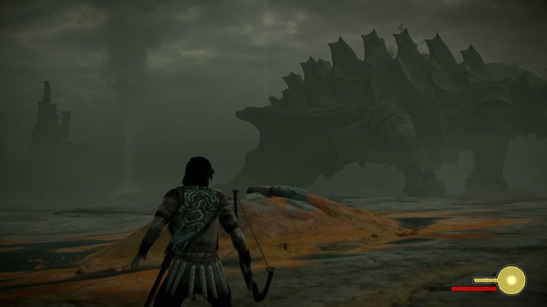

Home
Other Games by Team Ico
Other Games by Sony
Other Games by Japan Studio
Other Games by Team Ico
Team Ico is one of the three main teams that created The Last Guardian, and they have made two other amazing games as well; Shadow of the Colossus and Ico.
Shadow of the Colossus
Shadow of the Colossus is an action-adventure game made in 2005, similar to that of The Last Guardian. It takes place in a fantasy setting and you play as a man named Wander, who enters into an isolated and abandoned region of a realm seeking power to revive his friend; Mono.

"Shadow of the Colossus" by famikooooon is licensed under CC BY-SA 2.0
Shadow of the Colossus was given a 91% rating by Metacritic.
94% of Google Users liked Shadow of the Colossus.
On Google, Shadow of the Colossus has a 4.4 audience rating summary with almost 800 ratings.
Ico
Ico is an action-adventure game made in 2001, similar to that of The Last Guardian and Shadow of the Colossus. Named after both the game and the studio, a boy named Ico was born with horns that his village rejected, since they see it as a bad omen. Ico was then locked away in an abandoned fortress, and he sets out to escape with a girl named Yorda and keeps her safe from the creatures that try to drag her back.

Ico was given a 92% rating by Metacritic.
93% of Google Users liked Ico.
On Google, Ico has a 4.9 audience rating summary.